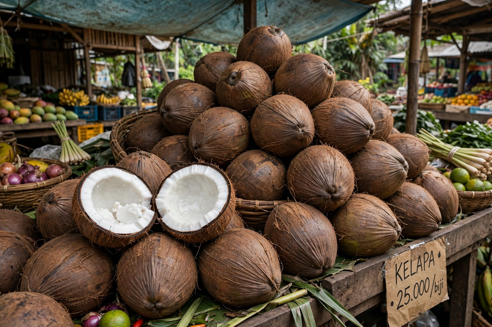

Coconut
From Wikipedia, the free encyclopedia

The coconut palm (Cocos nucifera) is a tall palm of tropical coasts whose large fruit — the coconut — is one of the most versatile plant products in the world. Botanically a fibrous one-seeded drupe (not a true nut), the fruit has a smooth outer skin, a thick husk of fibre (coir), and a hard woody shell with three dark germination pores — the "eyes". Inside lie the white solid endosperm (coconut meat) and the clear liquid endosperm (coconut water). Indonesia, the Philippines and India are the largest producers. Few palms rival it: in much of the tropics it is called the "tree of life".
Dispersal and history
Coconuts float and survive long ocean voyages, so the palm spread naturally across the Indo-Pacific and was further carried by Austronesian voyagers and later traders. Two broad genetic groups are recognised: a Pacific group domesticated in island Southeast Asia and an Indo-Atlantic group from the Indian subcontinent. Europeans met the nut through Indian Ocean trade; the name comes from the Portuguese coco, a mythical hairy monster, evoked by the three dark pores on the shell.
Products
Almost every part is used. Coconut water from young green nuts is a sterile, mildly sweet drink. Grated mature meat squeezed with water gives coconut milk and cream, the base of curries and desserts across South and Southeast Asia, the Pacific and the Caribbean. Dried meat (copra) is crushed for coconut oil, used in cooking, soap and cosmetics. Husk fibre becomes rope, matting and growing medium; shells become charcoal and utensils; the palm's sap is tapped for toddy and palm sugar, its trunk used as timber and its leaves for thatch and weaving.
Nutrition and safety
Coconut meat and milk are energy-dense and high in saturated fat — unusual among plant foods — which has made coconut oil a subject of continuing nutritional debate. Coconut water, by contrast, is low in fat and rich in potassium. Falling coconuts are a genuine hazard in the tropics, a staple caution in travel medicine, and the nuts figure in survival lore because a stranded person can drink and eat from them for some time.